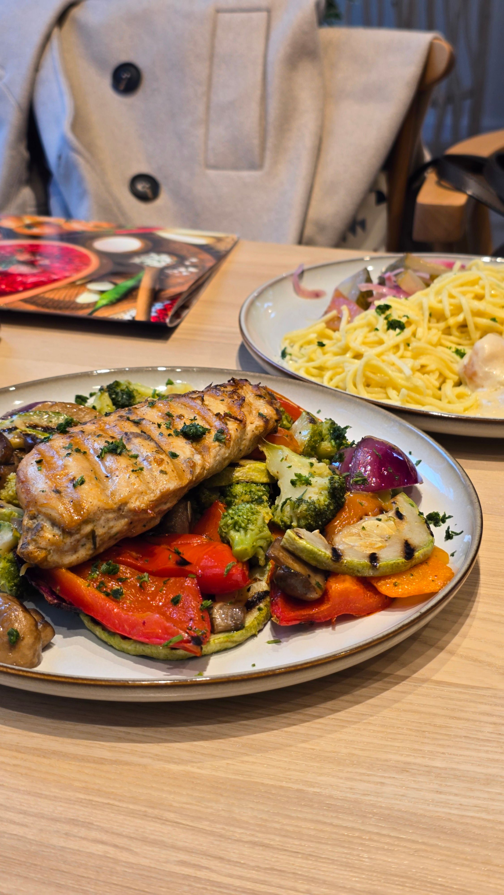

Основные блюда
Главные блюда, созданные для особенного вечера.
Рибай сухой выдержки собственного производства
Сочный рибай с ароматом розмарина и лёгкой лимонной ноткой. Подаётся с запечённым картофелем дольками и брокколи - насыщенно, ярко и без лишнего.
Биточки из судака
Биточки из нежного судака с золотистой корочкой, под сливочно-карри соусом с лёгкой лимонной ноткой. Подаются с рассыпчатым рисом и яркими овощами - брокколи, зелёный горошек и кабачок. Завершены сливочным маслом, укропом и свежим зелёным луком - вкус мягкий, насыщенный и очень уютный.
Паста с трюфелем
Домашняя паста, сливочный соус, пармезан
Шницель куриный
Хрустящий куриный шницель в панко, с тягучей моцареллой и томатным соусом. Подаётся с рукколой, шпинатом и сочными черри - сочно, контрастно и очень аппетитно